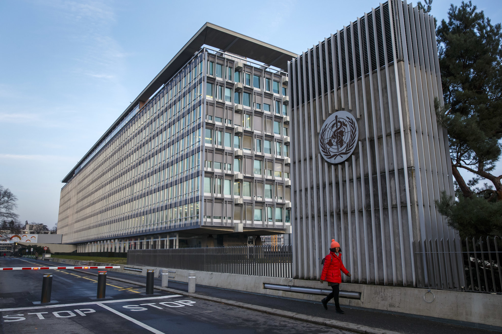

WORLD HEALTH ORGANIZATION
WORLD HEALTH ORGANIZATION

The World Health Organization (WHO) is a specialized agency of the United Nations responsible for international public health.The WHO Constitution states its main objective as "the attainment by all peoples of the highest possible level of health".
Headquartered in Geneva, Switzerland, it has six regional offices and 150 field offices worldwide.The WHO was established on 7 April 1948.The first meeting of the World Health Assembly (WHA), the agency's governing body, took place on 24 July of that year.
The WHO incorporated the assets, personnel, and duties of the League of Nations' Health Organization and the Office International d'Hygiène Publique, including the International Classification of Diseases (ICD).Its work began in earnest in 1951 after a significant infusion of financial and technical resources.
“Good health is not something we can buy. However, it can be an extremely valuable savings account.”
-Anne Wilson Schaef
ABOUT WHO